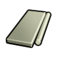
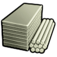

石化工业·后期Vile本地补丁×1塑料级·石化工业·聚丙烯PPPlastic
塑料级可塑成品 448 件:家具建筑262 · 防具106 · 穿戴件18 · 近战工具49 · 远程武器7 · 其它6
常规硬性件331 + 轻量塑料件117
vs 塑料用途 100% 重合,只差护甲/重量/价值;比钢少 504 件 —— 如 破墙斧、mechband antenna… 都选不到它
Things/Item/Resource/Plastic Single (110,150,235)(84,127,255)
护甲 0.74/1.50/0.10 利钝 0.60/1 价值 2 质量 0.20 Bulk 0.35
stuff LightMaterial, Plastic, StrongMetallic
HSK Plastics, LightBar, INSBar
产自 Make Polypropylene Plastic x25(石油化工装置)
源 Vile's Materials Science
Alloys_Industrial_Composites.xml
石化工业·后期Vile本地补丁×1塑料级·石化工业·聚氯乙烯PVCPlastic
塑料级可塑成品 448 件:家具建筑262 · 防具106 · 穿戴件18 · 近战工具49 · 远程武器7 · 其它6
常规硬性件331 + 轻量塑料件117
vs 塑料用途 100% 重合,只差护甲/重量/价值;比钢少 504 件 —— 如 破墙斧、mechband antenna… 都选不到它
 生效·PlasticCore_SK
生效·PlasticCore_SKThings/Item/Resource/Plastic Single (120,180,120)(104,234,230)
护甲 0.66/1.42/0.14 利钝 0.60/1 价值 2 质量 0.20 Bulk 0.35
stuff LightMaterial, Plastic, StrongMetallic
HSK Plastics, LightBar, INSBar
产自 Make PVC Plastic x25(石油化工装置)
源 Vile's Materials Science
Alloys_Industrial_Composites.xml
石化工业·后期HSK本地补丁×1上游补丁×1塑料Plastic
塑料级可塑成品 448 件:家具建筑262 · 防具106 · 穿戴件18 · 近战工具49 · 远程武器7 · 其它6
常规硬性件331 + 轻量塑料件117
本档基准 塑料级起点,其余塑料都拿它当参照;比钢少 504 件 —— 如 破墙斧、mechband antenna… 都选不到它
① 起点 · Core_SK 的 Defs 写 Things/Item/Resource/Plastic (240,240,240)
 PlasticCore_SK
PlasticCore_SK② Vile 换成 Things/Item/Material/HDPEWhite (248,248,239) ← Alloys_Industrial_Composites.xml

aVile's Materials SciencebVile's Materials Science
cVile's Materials Science③ 生效(终态) Things/Item/Resource/Plastic (240,240,240) ← 10_Vile贴图还原.xml
 PlasticCore_SK
PlasticCore_SKThings/Item/Resource/Plastic Single (240,240,240)(248,248,239)被87条配方消耗贴图链 3 段
护甲 0.68/1.55/0.10 利钝 0.60/1 价值 2 质量 0.20 Bulk 0.35
stuff LightMaterial, Plastic, StrongMetallic
HSK Plastics, LightBar, INSBar
产自 Make HDPE Plastic x25(石油化工装置) ; Create plastic(无工作台) ; Create plastic with sulphate filler(无工作台)
源 Core_SK
Items_Resource_Chemical.xml ; StuffCategories_SK.xml